strange music page
progressive rock * * * pink floyd
#pink floydです、といっても個人的な興味は初期(Syd Barrett在籍時)から中期くらいまでです。サイケでフォークな感じの曲が気に入ってます。S.Barrettのソロとかも無茶苦茶格好良いです。あと、R.Wrightのソロとかも結構気にいてます、流れるような感覚のポップスなんですが、イギリス人らしいウェットさが気持ちいいです。R.Wrightは最新作の"対"にも参加してて、"対"の"鬱"よりも落ち着いた気持ち良い音はこの人のせいかなーとか勝手に思ってます。(1999.2.21)
http://www.pinkfloyd.com/
|
- Pink Floyd
- Syd Barrett
- Dave Gilmour
- Richard Wright
- Nick Mason
- Roger Waters
- Radio K.A.O.S. (1987)
- Amused To Death
|
#ボックスセット「Shine On」に「The Early Singles」っていうボーナスCDが付いてて、それのブートだと思いますけど、「Scarecrow」が外されてて、代わりに「Scream Thy Last Scream」「Vegetable Man」が収録されてます。この2曲は没になったシングルみたいです。正規版よりもお得かも(Scarecrowは1stで聴けるし)。
やっぱ、ギリギリ気違いになるまえのシドバレットはさいこーです。リックライトのシングル曲(Julia Dream)も好き。(2002.10.31)
- Arnold Layne
- Candy And A Current Bun
- See Emily Play
- Scream Thy Last Scream
- Vegetable Man
- Apples And Oranges
- Paintbox
- It Would Be So Nice
- Julia Dream
- Be Careful With That Axe,Eugene
- Point Me At The Sky
- Syd Barrett
- Roger Waters
- Richard Wright
- Nick Mason
- Dave Gilmour
SPA: 02-CD-3321
#ピンクフロイドの初アルバム。シドバレット在籍時の唯一のアルバム。サイケデリックな60年代ポップスという感じ。アルバムとしての出来は今一つな感じがします。当時のライブのほうがサイケな感じが出ていて面白いのではないかと思います。それでもAstronomy DomineとかIntersteller Overdriveとかは格好良いです。
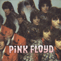
- Astronomy Domine (天の支配)
- Lucifer Sam
- Matilda Mother
- Flaming
- Pow R. Toc H.
- Take Up Thy Stethoscope and Walk (神経衰弱)
- Interstellar Overdrive (星空のドライヴ)
- The Gnome (地の精)
- Chapter 24
- Scarecrow (黒と緑のかかし)
- Bike
- Syd Barrett (guitars,vocals)
- Roger Waters (bass,vocals)
- Richard Wright (organ,piano)
- Nick Mason (drums)
#1968年の2枚目.....精神不安定になったSyd Barrettの代わりにDave Gilmourがこのアルバムから正式メンバーとして参加しています。
過渡期....と思います。前作のビートルズっぽいポップな曲やちょっとプログレっぽい実験的な曲とか、ソフトロックみたいなのとかが入り混じってます。全体的にはっきりしない靄がかったイメージのアルバムです。
今久々に聴き直しているんですが、一番BEATLESの影響が顕著なアルバムかも知れないです。
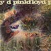
- Let There Be More Light (光を求めて)
- Remember A Day (追憶)
- Set The Controls for The Heart of The Sun (太陽賛歌)
- Corporal Clegg
- A Saucerful of Secrets (神秘)
- See Saw
- Jugband Blues
- Roger Waters (bass,guitars,vocals)
- Richard Wright (organ,piano,vocals)
- Nick Mason (drums)
- Dave Gilmour (guitars,vocals)
- Syd Barrett (rhythm guitars)
CAPITOL RECORDS: CDP-7-46383-2 (oroginal release 1968 - EMI RECORDS)
#当時のサイケな映画のサントラです。わりと当時のライヴで演奏されていた曲も多く収録されています。ピンクフロイドのアルバムというと良くも悪くも作為的な感じがするのですが、サントラということも有り、69年当時のバンドの姿が伺えるものです。個人的には好きなのですが、逆にアルバム1枚としてみると散漫な作りかもしれないです。
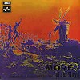
- Cirrus Minor
- The Nile Song
- Crying Song
- Up The Khyber
- Green is The Colour
- Cymbaline
- Party Sequence
- Main Theme
- Ibiza Bar
- More Blues
- Quicksilver
- A Spanish Piece
- Dramatic Theme
- Roger Waters (bass,vocals)
- Dave Gilmour (gutiars,vocals)
- Nick Mason (drums,percussions)
- Richard Wright (keyboards)
#2枚組みで片面がライヴ盤、片方がスタジオ盤です。ライヴ盤の方はとりあえず当時の様子がよく伝わってくる4曲です、サイケでドラッギーな勢いが気持ち良いです、今聴いても十分格好良いですし。"ユージン斧に気をつけろ"とかも緊迫感があって良いです。んで、スタジオ盤のほうは各メンバーのやりたい事を持ち寄った感じです。各メンバーの色々な素質がかいま見えます、まとまりないのはしょうがないかも。
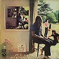
DISC 1:
- Astronomy Domine
- Careful with that Axe, Eugine
- Set the Controls for Heart of the Sun
- A Saucerful of Secrets
DISC 2:
- Symphus
- Parts 1 - 4
- Grantchester Meadows
- Several Speies of Small Furry Animals gathered together in a Cave and Grooing with a Pict
- The Narrow Way
- Parts 1 - 3
- The Grand Vizier's Garden Party
- Part 1 - Entrance
- Part 2 - Entertainment
- Part 3 - Exit
- Dave Gilmour (guitars,vocals)
- Roger Waters (bass,vocals)
- Richard Wright (organs,keyboards,vocals)
- Nick Mason (drums,vocals)
#ロック史上に残る邦題だと思います。誰なんでしょうか、こんな邦題をつけたのは...それはともかくとして、かなり有名なアルバムです。ただ、A面の大曲はPink Floydというより、R.Geesinによるところが大きいのかもしれないです。どちらかというとサイケフォークな感じのB面の方にこの頃のPink Floydが現れていると思います。私の親父がこのアルバムを好きだったらしく、子どもの頃にだいぶ聴かされていたみたいです。
あと、会社のMacのデスクトップにこれ張りつけてたら、40過ぎの偉い人に懐かしいねーとか言われた。やっぱリアルタイム世代はすごいなー、これ平気で聞いてるから。
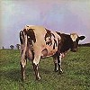
- Atom Heart Mother (原子心母)
- Father's Shout (父の叫び)
- Breast Milky (ミルクたっぷりの乳房)
- Mother Fore
- Funky Dung (むかつくばかりのこやし)
- Mind Your Throats Please (喉に気をつけて)
- Remergence (再現)
- If (もしも)
- Summer '68
- Fat Old Sun (でぶでよろよろの太陽)
- Alan's Psychedelic Breakfast
- Rise and Shine
- Sunny Side Up
- Morning Glory
- Dave Gilmour (guitars,vocals)
- Roger Waters (bass,vocals)
- Richard Wright (keyboards,vocals)
- Nick Mason (drums,percussions)
#1曲目のタイトルは聞いたまんまです。2曲目から5曲目ははリラックスしたサイケフォークみたいな曲です。大曲の6曲めEchoesですがだらだら長いです。長いですけどイイです、20分以上のプログレの曲で好きなのはたぶんこの曲くらいだと思います。
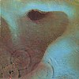
- One of These Days (吹けよ風、呼べよ嵐)
- A Pillow of Winds
- Fearless
- San Tropez
- Seamus
- Echoes
- Dave Gilmour (guitars,vocals)
- Roger Waters (bass,vocals)
- Richard Wright (organs,keyboards)
- Nick Mason (drums)
#これもモアと一緒でサントラです。なんだか「おせっかい」と「狂気」に挟まれてて影の薄いアルバム。「狂気」が死ぬほど計算高く作られてるのに較べて、このアルバムは良く言えばラフな感じ.....悪く言えば雑かも。
なんだか60年代サイケっぽい曲も入ってたりするんだけど、全体としてはちょっと。
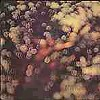
- Obscured by Clouds
- When You're In
- Burning Bridges
- The Gold It's The...
- Wot's...Un The Deal
- Mudmen
- Childhood's End
- Free Four
- Stay
- Absolutely Curtains
- Roger Waters (bass,vocals)
- Dave Gilmour (guitars,vocals)
- Nick Mason (drums)
- Richard Wright (organ,keyboards)
#世界で一番売れたプログレのアルバムです。今更自分がこのアルバムにどーこー言う事なんて無いんですけど、やっぱ後半の"Brain Damage"～"Eclipse"の流れなんてとても引き込まれて行く雰囲気を持ってますね。
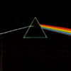
- (a) Speak To Me
(b) Breathe In The Air (生命の息吹き)
- On The Run
- Time
- The Great Gig In The Sky (虚空のスキャット)
- Money
- Us And Them
- Any Colour You Like (望みの色を)
- Brain Damage (狂人は心に)
- Eclipse (狂気日食)
- Dave Gilmour (vocals,guitars,VCS3)
- Nick Mason (percussions,tape effects)
- Richard Wright (keyboards,vocals,VCS3)
- Roger Waters (bass,vocals,VCS3,tape effects)
- Dick Perry (sax on 5.6.)
- Clare Torry (vocals on 4.)
東芝EMI: TOCP-7652 (original release 1973)
#えーと、狂気の次のアルバム。めちゃくちゃ完成度高いです、狂気よりも１曲１曲の出来は良いかも。どー聞こえるかとかを計算された音みたいです。D.Gilmourのギター格好良いです。でも邦題..."あなたがここにいてほしい"って直接指定があったはずなのに"炎"って...ジャケットそのまんまやん。
あ、でも完成度高いけど個人的にはそんなに好きじゃないです。なんか作りすぎなような気がして、このアルバム以降は。
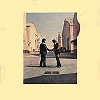
- Shine On You Crazy Diamond
Part I
Part II
Part III
Part IV
Part V
- Welcome To The Machine
- Have A Cigar
- Wish You Were Here
- Shine On You Crazy Diamond
Part VI
Part VII
Part VIII
Part IX
- Dave Gilmour (guitars,vocals)
- Roger Waters (bass,vocals)
- Richard Wright (keyboards)
- Nick Mason (drums)
- Dick Parry (sax)
- Roy Harper (vocals)
CBS SONY: 28DP-5005 (original released on 1975)
#洋楽聴きはじめた頃に手にした一枚。ギルモアのソロみたいと言えばそうなんですけど、結構気に入ってます(少なくともアニマルズよりは)
ロジャー・ウォーターズが居なくなってウォールの頃の閉塞感みたいなのは無くなって、ちょっと軽いというか薄い感じもしますけど。
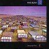
- Signs of Life (生命の動向)
- Learning to Fly (幻の翼)
- The Dogs of War (戦争の犬たち)
- One Slip (理性喪失)
- On the Turning away (現実との差異)
- Yet Another Movie (空虚なスクリーン)
Round and Around (輪転)
- A New Machine Pt.1
- Terminal Frost (末梢神経の凍結)
- A New Machine Pt.2
- Sorrow (時のない世界)
- Dave Gilmour (guitars,vocals)
- Nick Mason (drums)
- Richard Wright (keyboards,vocals)
#鬱から6年もアルバムが出てなかったにもかかわらず、自然に聴けます。ほとんど何も変わらずのピンクフロイドのアルバムです。何にも無かったかのように。
ひたすら気持良いギターのトーンで、安心して寝れます。キーボードの音も心地よく.....グー。
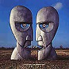
- Cluster One
- What Do You Want From Me
- Poles Apart
- Marooned
- A Great Day for Freedom
- Wearing The Inside Out
- Take It Back
- Coming Back to Life
- Keep Talking
- Lost for Words
- High Hopes
- Dave Gilmour (guitars,vocals,bass,programming)
- Nick Mason (drums,percussions)
- Richard Wright (keyboards,vocals)
- Jon Carin (programming,keyboards)
- Guy Pratt (bass)
- Gary Wallis (percussions)
- Tim Renwick (guitars)
- Dick Parry (tenor sax)
- Bob Ezlin (keyboards,percussions)
#えーといわゆるブートレグの類のCDです。たぶん1969か1970くらいの時期のライヴと思います、いわゆる"狂気"のイメージのPINK FLOYDのスタイルを確立する前の60年代の雰囲気を残した演奏が聴けます。
"Green Is The Colour"や"Julia Dream"等の瑞々しいサイケフォーク(なんか変な言いまわしかも)が好きです。どことなくBEATLESを感じさせるような、それでもPINK FLOYDな。
ちなみになんだかレコードのスクラッチノイズが聞こえます、ブートLPの盤起こしってヤツでしょうか？曲紹介とか入ってるので音源はBBCとかだと思うんですけど。
- Embryo
- Green Is The Colour
- Careful with The Axe, Eugene
- Let There Be More Light
- Murderistic Woman
- Point Me At The Sky
- The Narrow Way
- Julia Dream
- A Saucerful of Secrets
- One of These Days
- Echoes
- Roger Waters
- Daivd Gilmour
- Richard Wright
- Nick Mason
#知らない方のために書いておきますけど、Syd BarrettはPink Floydのリーダーだった人です。Pink Floydの1枚目を出した後くらいにちょっとおかしくなって、バンドを脱退しちゃいました。これはそのSyd Barrettの1枚目です。ヤバイです、毎日聴いてるとこっちもおかしくなりそうです。それでもサイケでキチガイな世界はとっても気持ち良かったりもします。ちなみに2,3曲目の演奏はソフトマシーンだす。堀越CD返せ。
#追記、なんか急に聴きたくなったのでTSUTAYAでレンタルしてきたら、今の国内盤だとボーナストラックが入ってるみたいです。シドバレット弾き語り状態のデモが6曲プラスです。やっぱりヘロヘロ、でもカッチョイイです。
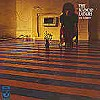
- Terrapin (カメに捧ぐ詩)
- No Good Trying (むなしい努力)
- Love You
- No Man's Land (見知らぬ所)
- Octopus (タコに捧ぐ詩)
- Golden Hair (金色の髪)
- Long Gone (過ぎた恋)
- She Took a Long Cold Look (寂しい女)
- Feel
- If It's in You
- Late Night (夜もふけて)
- Octopus (Take 1 & 2)
- It's No Good Trying (Take 5)
- Love You (Take 1)
- Love You (Take 3)
- She Took A Long Cold Look At Me (Take 4)
- Golden Hair
- Syd Barrett (guitars,vocals)
- Dave Gilmour (bass,drums)
- Roger Waters (bass,drums)
- Richard Wright (keyboards)
- Jerry Shirley (drums)
- John Willy Watson (bass)
- Mike Ratledge (organs on 2.3.)
- Hugh Hopper (bass on 2.3.)
- Robert Wyatt (drums,percussions on 2.3.)
東芝EMI: TOCP-3430 (original release 1969 - EMI RECORDS)
#吉祥寺ディスクユニオンにて、\1200でした。2枚目のソロアルバムなんですが、こっちはちょっとタダのダメって感じになって、1枚目のキチガイフォークソングな雰囲気はちょっと薄いです。曲によってはもう破綻寸前です、でもそーゆー曲の方が面白かったりも。(1999.12.13)
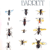
- Baby Lemonade
- Love Song
- Dominoes
- It Is Obvious
- Rat
- Maisie
- Gigolo Aunt
- Waving My Arms In The Hair
- I Never Lied To You
- Wined And Dined
- Wolfpack
- Effervescing Elephant
produced by David Gilmour & Richard Wright
- Syd Barrett (vocals,guitars)
- Jerry Shirley (drums)
- David Gilmour (bass)
- Richard Wright (organ,piano,harmonium)
東芝EMI: TOCP-7365 (original release 1970.11 - EMI RECORDS)
#Pink FloydのkeyboardのRichard Wrightのソロアルバムです、1978年のアルバムなので、たぶんAnimalsとWallの間だと思います。なんか"狂気"より後のアルバムでのRichard Wrightのバンドに対する占める割合はだんだん少なくなってる印象を持っていて、 炎以降のアルバムって何となくバランスを欠いていたように思います。このアルバムは全然派手な所とか無いアルバムですけど、このアルバムの控え目な淡い感覚はそれ以降のPink Floydにはあまり感じられない感覚で、自分が中期のPink Floydの好きな理由だったと思います。(1999.2.21)
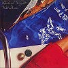
- Mediterranean C
- Against the Odds
- Cat Cruise
- Summer Elegy
- Waves
- Holiday
- Mad Yannis Dance
- Drop in from the top
- Pink's Song
- Funky Deux
- Richard Wright (vocals,keyboards)
- Mel Collins (sax,flute)
- Snowy White (guitars)
- Larry Steele (bass)
- Red Isadore (drums)
SONY RECORDS: SRCS-6407 (original released on 1978)
#えーとN.Masonのソロです、全然Pink Floydではないです。どっちかというとカンタベリー系のポップスに分類したほうが良いかもしれないです、R.Wyatt参加ですし(6曲目。とても良いです、聴くべし)。N.Mason名義のアルバムですが、ほとんどCarla Bleyとの共作アルバムみたいな感じです。面白いです。(1999.2.21)
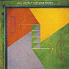
- Can't Get My Motor to Start
- I Was Wrong
- Siam
- Hot River
- Boo to You too
- Do Ya ?
- Wervin'
- I'm A Mineralist
- Nick Mason (drums,percussions)
- Robert Wyatt (vocals)
- Chris Spedding (guitars)
- Carla Bley (keyboards)
- Gary Windo (clarinet,flute)
- Karen Kraft (vocals)
- Gary Valente (trombone)
- Mike Mantler (trumpet)
- Howard Johnson (tuba)
- Steve Swallow (bass)
- Terry Adams (piano on 5.)(harmonica,clavinet on 1.)
SONY RECORDS: SRCS-6408 (original released on 1981)